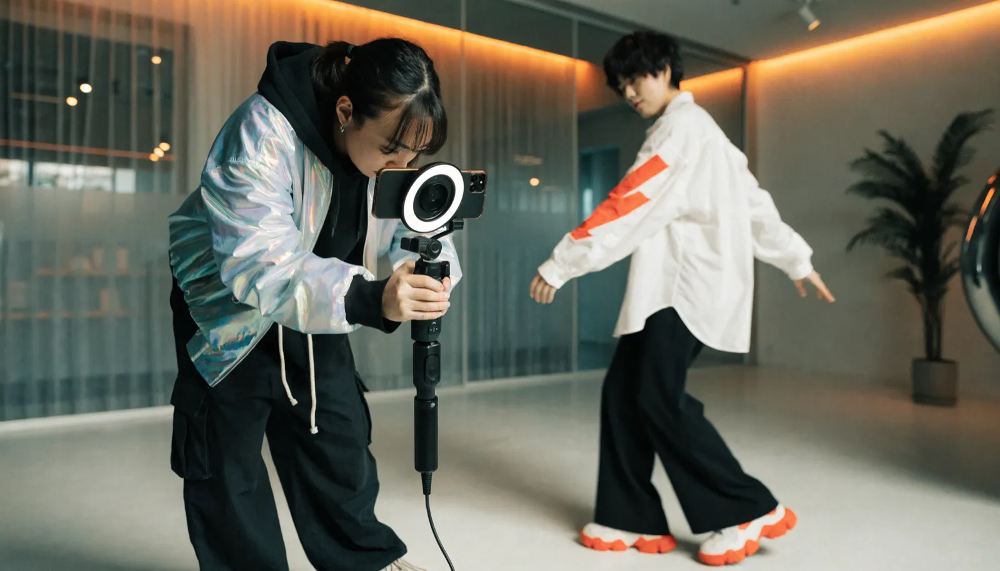

TikTok運用代行 ｜ 東京 ｜ 費用
TikTokは
「企画力」で伸びます
東京でTikTok運用代行の費用・相場をお調べの方へ。TikTok運用代行とは何か、料金は何で決まり、費用で失敗しないためにどこを見ればいいのか。株式会社NOKTOAが、企画・撮影・編集・分析まで一貫対応する立場から正直に解説します。

TikTok運用代行とは
TikTok運用代行とは、企業に代わってTikTokアカウントの戦略設計・企画・撮影・編集・投稿・分析改善を行うサービスです。TikTok特有のテンポやトレンドを踏まえて、継続的に動画を制作し成果につなげる体制を専門家が担います。
TikTokは、フォロワーが少なくても企画次第で一気に拡散する可能性を持つ、他にはないプラットフォームです。一方で、トレンドの移り変わりが速く、最初の1〜2秒で離脱されるシビアな世界でもあります。自社で運用しようとすると、企画・撮影・編集・トレンド追従のすべてを高速で回し続ける必要があり、片手間ではまず続きません。
TikTok運用代行は、この負荷を専門家に委ねるサービスです。ただし中身は会社によって大きく異なり、テンプレ編集を量産するだけのところもあれば、アカウント戦略から企画・撮影まで担うところもあります。費用の差は、この「どこまで任せられるか」の差です。
また、TikTokで伸びた動画はInstagramのリールやYouTubeショートにも転用でき、一つの企画を複数のプラットフォームで活かせます。TikTokを起点に縦型動画の運用全体を設計することで、投資した制作費をより広く回収できるのも、運用代行を活用する利点です。
TikTok運用代行の費用を決める5つの要素
結論：費用は「企画力」と「撮影」を含むかどうかで大きく変わります。
TikTok運用代行の料金は、おおむね次の要素で決まります。見積もりを読むときのチェックリストとしてお使いください。
- 月の投稿本数：月に何本を企画・制作・投稿するか
- 撮影の有無：素材支給か、プロが撮影に入るか。費用への影響が大きい項目です
- 企画・トレンド対応：伸ばすための企画やトレンド追従をどこまで行うか
- 編集の作り込み：テロップ、エフェクト、音楽の合わせ方の密度
- 分析・改善：再生数や視聴維持を見て次に活かす体制があるか
とくに「企画力」と「撮影」を含むかどうかが、月10万円台と月30万円台を分ける境目です。TikTokは編集の上手さよりも企画の鋭さで伸びるため、安価な編集代行では成果が出にくいのが実情です。
東京でのTikTok運用代行 費用の目安
あくまで一般的な相場感です。内容により変動します。
| タイプ | 月額の目安 |
|---|---|
| 編集代行中心（撮影なし） | 10〜20万円 |
| 企画・撮影・編集・分析の本格運用 | 30〜50万円 |
| 複数アカウント・広告連携まで | 50万円〜 |
NOKTOAは、アカウント戦略・企画・撮影・編集・分析改善までを含むTikTok運用を、月額30万円〜（税別）で提供しています。映像制作を本業とする私たちは、運用代行でありながら企画と撮影のクオリティを妥協しないのが特長です。
費用で失敗しないための3つの視点
結論：TikTokは「企画から作れる会社」を選ばないと成果が出ません。
1. 企画から提案できるか
TikTokは企画がすべてと言っても過言ではありません。テンプレ編集の量産ではなく、伸びる企画を出せる体制かどうかが最重要です。
2. 撮影・編集のテンポを作れるか
最初の1秒で惹きつけ、最後まで見せきるテンポ感は、TikTok特有の技術です。これを再現できるかで再生数が変わります。
3. 数値で高速に改善できるか
反応を見て、当たった型を素早く量産し、外れた型を切る。この高速なPDCAが回せるかどうかが、伸びるアカウントの条件です。
NOKTOAは経営理念に「『伝える』を『資産』へ。」を掲げ、TikTokを一過性のバズではなく、ブランドと顧客接点が積み上がる資産として運用します。費用対効果に本気で向き合う企業さまの、戦略的パートナーでありたいと考えています。
成果が出るまでの期間と 費用の考え方
結論：TikTokは「当たれば速い、でも当てるまでは検証期間」と捉えるべきです。
TikTokは他のSNSに比べて拡散の初速が速く、当たる企画を掴めば短期間で一気に伸びる可能性があります。一方で、その「当たる企画」を見つけるまでには、いくつもの投稿で反応を試す検証期間が必要です。一般的には、勝ちパターンが見えてくるまで2〜3か月、安定的に伸び始めるまで半年ほどを見ておくと安心です。
だからこそ費用は、単月の再生数で判断するのではなく、「検証を通じて、自社が伸びる型を見つけられたか」で見るのが正しい捉え方です。最初の数か月の投資で勝ち型を掴めれば、その後は同じ型を量産して効率よく伸ばせます。
NOKTOAは毎月の数値を見ながら、当たった企画を素早く量産し、外れた型を切る高速なPDCAを回します。費用を「払って終わり」にせず、伸びる型が積み上がるアカウントに育てていきます。
料金は 御社のアカウント目的に合わせて設計します
TikTok運用代行の費用は「一律いくら」ではありません。狙う成果、投稿本数、撮影の規模によって最適な体制が変わるからです。NOKTOAは決まったプランを押し付けるのではなく、ご予算と目的を伺って、その範囲で最も成果が出る運用設計を逆算してご提案します。
スモールスタート
月数本から、まずアカウントの型と勝ち企画を探る。小さく始めたい方に。
スタンダード
企画・撮影・編集・分析まで一貫対応。本格的に伸ばす運用です。
フラッグシップ
複数アカウント・広告連携まで。本格的に集客の柱に育てるフェーズに。
「この予算でどこまでできる？」というご相談こそ大歓迎です。まずは月数本から始めて、成果を見ながら広げる進め方もご提案します。ご相談・お見積もり、既存アカウントの簡易診断まで無料で承ります。無理な営業は一切いたしません。
よくあるご質問
TikTok運用代行とは何ですか？
企業に代わってTikTokの戦略・企画・撮影・編集・投稿・分析改善を行うサービスです。TikTok特有のテンポやトレンドを踏まえ、継続的に動画を制作し成果につなげます。
TikTok運用代行の費用は東京でいくらですか？
編集中心で月10〜20万円、企画・撮影・編集・分析込みの本格運用で月30〜50万円が相場です。NOKTOAは一貫対応で月額30万円〜（税別）です。
TikTok運用代行の費用は何で決まりますか？
月の投稿本数、撮影の有無、企画・トレンド対応の深さ、編集の作り込み、分析改善の範囲で決まります。企画力と撮影を含むかが大きな分かれ目です。
BtoB企業でもTikTokは効果がありますか？
はい。採用や認知拡大の文脈で、BtoB企業の活用も増えています。御社の目的に合うかどうかから一緒に見極めますので、お気軽にご相談ください。